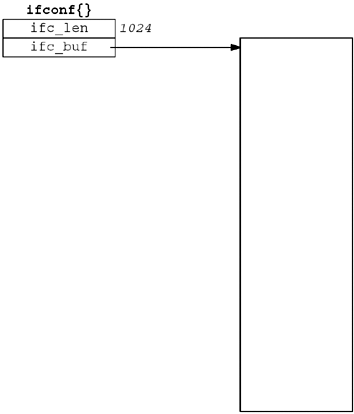
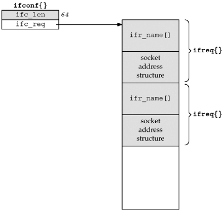

| [ Team LiB ] |
|
17.5 Interface ConfigurationOne of the first steps employed by many programs that deal with the network interfaces on a system is to obtain from the kernel all the interfaces configured on the system. This is done with the SIOCGIFCONF request, which uses the ifconf structure, which in turn uses the ifreq structure, both of which are shown in Figure 17.2. Figure 17.2 ifconf and ifreq structures used with various interface ioctl requests.<net/if.h>
struct ifconf {
int ifc_len; /* size of buffer, value-result */
union {
caddr_t ifcu_buf; /* input from user -> kernel */
struct ifreq *ifcu_req; /* return from kernel -> user */
} ifc_ifcu;
};
#define ifc_buf ifc_ifcu.ifcu_buf /* buffer address */
#define ifc_req ifc_ifcu.ifcu_req /* array of structures returned */
#define IFNAMSIZ 16
struct ifreq {
char ifr_name[IFNAMSIZ]; /* interface name, e.g., "le0" */
union {
struct sockaddr ifru_addr;
struct sockaddr ifru_dstaddr;
struct sockaddr ifru_broadaddr;
short ifru_flags;
int ifru_metric;
caddr_t ifru_data;
} ifr_ifru;
};
#define ifr_addr ifr_ifru.ifru_addr /* address */
#define ifr_dstaddr ifr_ifru.ifru_dstaddr /* other end of point-to-point link */
#define ifr_broadaddr ifr_ifru.ifru_broadaddr /* broadcast address */
#define ifr_flags ifr_ifru.ifru_flags /* flags */
#define ifr_metric ifr_ifru.ifru_metric /* metric */
#define ifr_data ifr_ifru.ifru_data /* for use by interface */
Before calling ioctl, we allocate a buffer and an ifconf structure and then initialize the latter. We show a picture of this in Figure 17.3 (p. 470), assuming our buffer size is 1,024 bytes. The third argument to ioctl is a pointer to our ifconf structure. Figure 17.3. Initialization of ifconf structure before SIOCGIFCONF. If we assume that the kernel returns two ifreq structures, we could have the arrangement shown in Figure 17.4 (p. 470) when the ioctl returns. The shaded regions have been modified by ioctl. The buffer has been filled in with the two structures and the ifc_len member of the ifconf structure has been updated to reflect the amount of information stored in the buffer. We assume in this figure that each ifreq structure occupies 32 bytes. Figure 17.4. Values returned by SIOCGIFCONF. A pointer to an ifreq structure is also used as an argument to the remaining interface ioctls shown in Figure 17.1, which we will describe in Section 17.7. Notice that each ifreq structure contains a union and there are numerous #defines to hide the fact that these fields are members of a union. All references to individual members are made using defined names. Be aware that some systems have added many implementation-dependent members to the ifr_ifru union. |
| [ Team LiB ] |
|